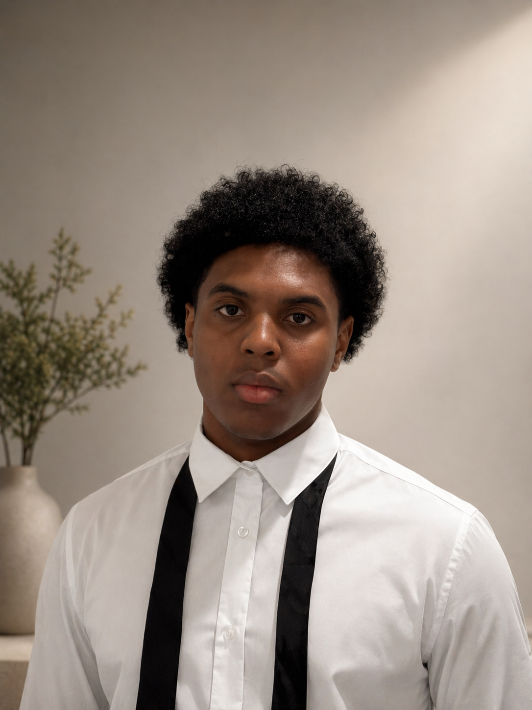

Experimental Editing Reel
A fast-paced montage focused on contrast, rhythm, graphic cuts and texture.

VIDEO EDITING / MOTION / 3D
01 / INTRO
I am looking for an internship or alternance where I can bring my eye for rhythm, atmosphere, and visual storytelling to real projects.
02 / PROFILE
I am a student passionate about editing, motion design and 3D. I like creating images that feel raw, precise and memorable, with special attention to pacing, mood and detail.
My goal is to join a creative team, learn from professionals, and keep developing a strong visual identity through real productions.
03 / FOCUS
Editing & post-production
Motion design experiments
3D visuals & atmosphere
04 / SELECTED WORK
A fast-paced montage focused on contrast, rhythm, graphic cuts and texture.
Motion Design Sequence
3D Visual Atmosphere
05 / TOOLS
06 / WHAT I BRING
07 / CONTACT
If you are looking for a motivated editing student for an internship or alternance, I would be happy to share my work and discuss your projects.